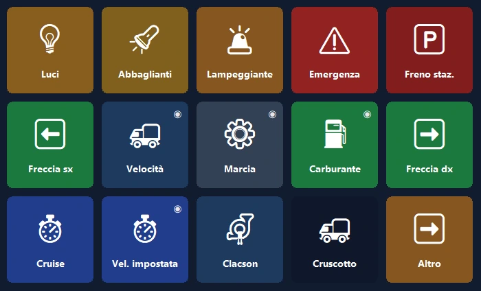
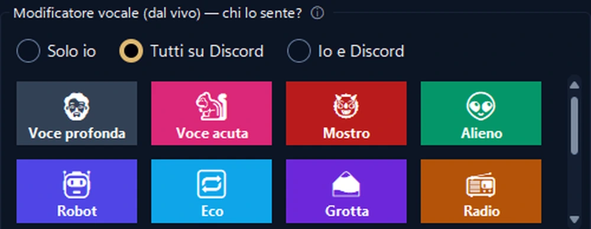
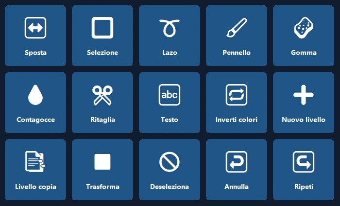
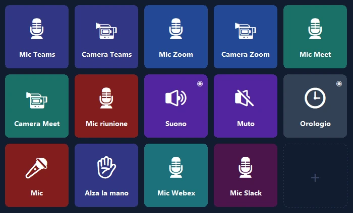

Il tuo telefono, il pannello di controllo del PC.
Scorciatoie con un tocco, OBS, Discord, Spotify e pannelli per i giochi. Via USB, Wi‑Fi o rete mobile, con crittografia end-to-end.
Il cruscotto del tuo camion, ora sul telefono.
Velocità, giri, carburante e spie realistiche in tempo reale; i comandi del camion a portata di tocco.
- 🚦Un vero cruscottoVelocità, limite, giri, carburante e orario di arrivo; le spie si accendono come nel gioco.
- 🕹Comandi con un toccoFari, freno di stazionamento, cruise control; guarda a sinistra o a destra con un tocco.
- 📳Nessuna configurazioneQuando avvii il gioco, il telefono propone un pannello pronto e poi ci passa da solo ogni volta.

Gestisci la diretta con una mano.
Il tuo telefono al posto di un costoso dispositivo: OBS, effetti sonori, Discord e musica su un solo schermo.
- 🎬Controllo di OBSScene, registrazione e diretta, timer direttamente sul tasto.
- 📳Pannello audio e musicaRiproduci suoni pronti, controlla Spotify e il volume di ogni app da un solo schermo.
- 🎙Studio VoceVoci naturali femminili, maschili e di bambino, o la tua; disattiva il microfono di Discord con un tocco.


Apri il programma, il pannello è già pronto.
Pannelli basati sulle scorciatoie ufficiali di Photoshop, Premiere Pro, After Effects, Illustrator, DaVinci Resolve, Blender, Figma e VS Code.
- ✨Nessuna configurazioneQuando il programma passa in primo piano, il telefono propone il suo pannello e poi ci passa da solo (Pro).
- ⌨Le scorciatoie giusteStrumenti, livelli, annulla, marcatori: con le scorciatoie standard di ogni programma.
Il microfono a un tocco.
Disattiva il microfono in Teams, Zoom, Meet, Webex e Slack senza configurare scorciatoie, anche quando la finestra della riunione è in secondo piano.
- 🎙Solo quel programmaWindows disattiva il microfono solo per il programma della riunione; gli altri programmi non cambiano.
- 🔴Stato sempre visibileFinché il microfono è disattivato, la spia del tasto resta rossa; incluso anche nella versione gratuita.

Lo schermo più utile sulla tua scrivania.
Inizia in un minuto con un layout pronto; i veri loghi dei tuoi programmi compaiono da soli.
Secondo schermo
Guarda lo schermo del PC sul telefono e usalo come mouse touch e tastiera.
Volume per app
Il volume di ogni programma separatamente; cuffie ↔ altoparlanti con un tocco.
Pagine intelligenti
Le pagine seguono il programma in primo piano; timer, cartelle e azioni in più passaggi.
Connettiti da ovunque
Non serve lo stesso Wi‑Fi: funziona anche con la rete mobile e con più PC.
Backup cloud crittografato
Il layout viene salvato crittografato senza account e torna su un nuovo PC.
Privacy
Nessun account, nessuna pubblicità, nessun tracciamento. I tasti restano sui tuoi dispositivi.
Pronto in un minuto.
Installa il programma
Scarica PanelDeck gratis per Windows e aprilo.
Scansiona il QR
L'app del telefono si connette in pochi secondi con il codice QR.
Tocca
Scegli un layout pronto o crea i tuoi tasti.
Paghi una volta, lo usi per sempre.
Nessun abbonamento, nessuna pubblicità, nessun tracciamento. Tutti gli aggiornamenti inclusi. Google Play mostra il prezzo locale del tuo paese.
Gratis
- Connessione via USB, Wi‑Fi e rete mobile
- 6 tasti nella prima pagina
- Scorciatoie, media, avvio programmi, Discord, timer
PanelDeck Pro
Prezzo di lancio; poi 6,99 $. 7 giorni di prova gratis.
- 6 schede, cartelle e tasti illimitati
- Secondo schermo, cursori del volume, informazioni dal vivo
- Pannello del camion, Studio Voce, pannelli all'apertura dei programmi
- Backup cloud crittografato
Buono a sapersi
Serve un account?
No. PanelDeck non chiede un account; i tuoi tasti restano sui tuoi dispositivi.
Funziona fuori casa?
Sì. Senza lo stesso Wi‑Fi il telefono si connette tramite rete mobile con crittografia end-to-end.
Con quali giochi funziona?
Euro Truck Simulator 2 e American Truck Simulator sono pienamente supportati. I pannelli dal vivo per simulatori di guida e di volo sono in beta.
Esiste per iPhone?
Per ora solo Android. La versione per iPhone e iPad è nei piani.
Windows dice «Windows ha protetto il PC», cosa faccio?
Fai clic su «Ulteriori informazioni» → «Esegui comunque». I dettagli sono nella guida all'installazione.